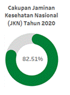

Visualisasi
Pilar Sosial Indikator Tujuan Pembangunan Berkelanjutan Indonesia Tahun 2020 yang
Terdampak Tinggi Covid-19
Defi Nurshaleha (221910795, 3SD1)
I. Latar Belakang
Pada era digital saat ini, jumlah informasi
yang berada di sekitar kita meningkat begitu pesat. Banyaknya e-mail
yang diterima, data penjelajahan di internet yang terekam, dan masih banyak
lagi data lainnya yang kita temui. Menanggapi fenomena tersebut, para pakar
mendefinisikannya sebagai information
pollution yang mengacu pada ledakan data yang kuantitasnya terus bertambah
dari hari ke hari. Data merupakan kumpulan fakta yang terekam tetapi tidak
memiliki arti apa pun. Data saja tidak cukup untuk membangun proses
komunikatif. Untuk memberikan makna maka data harus diproses ke dalam bentuk
yang lebih tepat salah satunya adalah dengan melakukan transformasi dan
manipulasi data yang akan menghasilkan informasi yang bernilai guna pengambilan
keputusan. Salah satu metode yang digunakan untuk memproses data agar lebih
mudah dipahami adalah dengan menggunakan visualisasi.
Visualisasi informasi terletak diantara
data dan informasi yang menyediakan alat dan metode yang digunakan untuk
mengatur dan mewakili data sehingga menghasilkan informasi yang memiliki nilai.
Visualisasi merupakan teknik menyajikan data secara viual melalui chart, grafik, dan peta. Tujuan dari
visualisasi data adalah agar informasi dapat tersampaikan secara informatif
dengan tampilan yang menarik dan mudah dipahami. Card.dkk (1999) berhasil
mendapatkan penjelasan mengenai bagaimana representasi visual dapat
meningkatkan proses kognitif sehingga memungkinkan pengamat mengambil beberapa
kesimpulan dengan mudah. Kemudian, dari studi empiris yang dilakukan Larkin dan
Simon (2010) pada saat mebandingkan visualisasi dengan deskripsi tekstual
didapatkan hasil bahwa visualisasi lebih efektif dibandingkan dengan deskripsi
tekstual.
Indonesia merupakan salah satu negara yang
berkomitmen untuk mengimplementasikan SDGs dalam pembangunan nasionalnya. Sustainable
Development Goals (SDGs) merupakan agenda internasional yang disusun oleh Perserikatan
Bangsa-Bangsa (PBB) yang bertujuan untuk menjaga peningkatan kesejahteraan
ekonomi masyarakat secara berkesinambungan, menjaga keberlanjutan kehidupan
sosial masyarakat, menjaga kualitas lingkungan hidup serta pembangunan yang
inklusif dan terlaksananya tata kelola yang mampu menjaga peningkatan kualitas
kehidupan dari satu generasi ke generasi berikutnya.
Pada webinar "Tantangan Pencapaian SDG14
dengan Adanya Pandemi Covid-19" yang dilaksanakan oleh sdgscenterunpad, adanya
pandemi covid-19 yang dirasakan oleh masyarakat global pada akhir tahun 2019, menyebabkan
terdampaknya skema pembangunan global dan nasional. Dampak pandemi Covid-19
yang sangat masif ini mengakibatkan seluruh negara di dunia harus mengevaluasi
setiap kegiatan/program pembangunan yang telah direncanakan sebelumnya untuk
kemudian digantikan dengan kegiatan/program untuk memperlambat, mengatasi
bahkan mengantisipasi dampak pandemi Covid-19 yang lebih buruk lagi.
Menurut UNDP (2020), pandemi Covid-19 akan
menyebabkan 44 juta penduduk dunia akan jatuh kedalam kemiskinan ekstrim pada
tahun 2030 apabila dijalankan skenario tertentu terkait pencapaian SDGs. Sementara
itu menurut analisa World Bank (WB), pandemi Covid-19 akan menyebabkan 40-60
juta penduduk dunia akan jatuh kedalam kemiskinan ekstrim, tergantung seberapa
besar dampak ekonomi yang dialami.
Dalam publikasi BPS yang berjudul "Indikator
Tujuan Pembangunan Berkelanjutan 2021", tujuan SDGs yang merupakan pilar sosial
yang terdampak tinggi Covid-19 diantaranya tujuan 1 (Tanpa Kemiskinan),
terdampaknya tujuan 1 ini mengakibatkan adanya peningkatan pengangguran yang
akan memicu peningkatan dalam tingkat kemiskinan. Kemudian, tujuan 2 (Tanpa
Kelaparan) yang ditandai dengan adanya peningkatan pada kerawanan dan terganggunya supply dan perdagangan bahan makanan
secara global. Serta terdampaknya tujuan 3 yang mengakibatkan tingkat
kematian yang meningkat akibat Covid-19 dan over
kapasitas dari fasilitas kesehatan.
Menurut Larkon dan Simon visualisasi lebih
efektif dengan adanya tiga hal berikut, yang pertama adalah lokalitas. Dalam
representasi visual, setiap elemen memiliki tempatnya dalam ruang fisik. Dalam
representasi yang dirancang baik, dua data akan diproses secara bersamaan
dengan diwakili olek elemen visual yang berbeda secara langsung dalam satu
diagram sehingga memungkinkan pembaca untuk membandingkan objek pada
visualisasi tersebut.
Dua alasan lainnya yang menyatakan
visualisi efektif adalah visualisasi meminimalkan pelabelan, hal ini sangat
efektif mengingat kemampuan manusia untuk mengenali informasi yang disajikan
dalam format visual tanpa deskripsi rinci dalam bentuk tekstual lebih baik.
Kemudian, seperti yang dijelaskan sebelumnya bahwa manusia memproses inferensi
persepsi melalui representasi visual yang memungkinkan kita dapat
mengidentifikasi hubungan dan ketergantungan antar data dengan sangat mudah.
Berdasarkan beberapa penjelasan diatas, penulis tertarik untuk melakukan
perancangan visualisasi indikator tujuan pembangunan keberlanjutan Indonesia
tahun 2020 yang terdampak tinggi Covid-19 yaitu tujuan 1, tujuan 2, dan tujuan
3. Kemudian, dilakukan pula analisis klaster dengan menggunakan hierarchical clustering, yang nantinya
klaster hasil analisis akan divisualisasikan berdasarkan karakteristik klaster dari
tujuan 1, tujuan 2, dan tujuan 3.
II. Tujuan
1.
Melakukan
visualisasi indikator tujuan pembangunan berkelanjutan Indonesia tujuan 1
"Tanpa Kemiskinan" dengan indikator 1.2.1* yakni persentase penduduk yang hidup
di bawah garis kemiskinan nasional, menurut jenis kelamin, dan kelompok umur.
2. Melakukan visualisasi
persebaran penduduk yang hidup di bawah garis kemiskinan.
3. Melakukan visualisasi
indikator tujuan pembangunan berkelanjutan Indonesia tujuan 2 "Tanpa Kelaparan"
dengan indikator 2.1.1* yakni prevalensi ketidakcukupan pangan.
4.
Melakukan
visualisasi indikator tujuan pembangunan berkelanjutan Indonesia tujuan 3 "Kehidupan
Sehat dan Sejahtera" dengan indikator 3.8.1.(a) unmet need pelayanan kesehatan,
indikator 3.7.2.(a) TFR, indikator 3.8.2.(a) cakupan JKN, dan indikator 3.c.1*
kepadatan dan distribusi tenaga kesehatan.
5.
Melakukan
analisis menggunakan hierarchical clustering
berdasarkan indikator 1.2.1 *, indikator 2.1.1*, dan indikator 3.8.1.(a).
6.
Melakukan
visualisasi hasil pengklasteran dengan metode hirarki berdasarkan indikator 1.2.1
*, indikator 2.1.1*, dan indikator 3.8.1.(a).
III. KAJIAN PUSTAKA
Tujuan Pembangunan
Berkelanjutan (TPB)
Sustainable Development Goals (SDGs)
merupakan agenda internasional yang disusun oleh Perserikatan
Bangsa-Bangsa (PBB) yang bertujuan untuk menjaga peningkatan kesejahteraan
ekonomi masyarakat secara berkesinambungan, menjaga keberlanjutan kehidupan
sosial masyarakat, menjaga kualitas lingkungan hidup serta pembangunan yang
inklusif dan terlaksananya tata kelola yang mampu menjaga peningkatan kualitas
kehidupan dari satu generasi ke generasi berikutnya.
Di dalam SDGs, terkandung
prinsip yang dapat membawa sebuah perubahan yang signifikan, yakni prinsip "leave no one behind" atau tidak ada
seorang pun yang ditinggalkan (Zibbri, M, dkk., 2021). SDGs terdiri dari
beberapa pilar diantaranya pilar ekonomi, sosial dan lingkungan di
mana ketiga persoalan tersebut bersinggungan antara satu dengan yang lainnya.
Pilar sosial SDGs terdiri dari :
1. Mengakhiri segala bentuk
kemiskinan.
2. Mengakhiri kelaparan, mencapai
ketahanan pangan dan peningkatan gizi, dan mencanangkan pertanian
berkelanjutan.
3. Menjamin kehidupan yang sehat
dan meningkatkan penduduk di segala usia.
4. Menjamin kualitas pendidikan
yang adil dan inklusif serta meningkatkan kesempatan belajar seumur hidup untuk
semua.
5. Mencapai kesetaraan gender dan
memberdayakan perempuan dan anak perempuan.
Persentase penduduk yang hidup
di bawah garis kemiskinan
Persentase penduduk yang hidup
di bawah garis kemiskinan nasional adalah banyaknya penduduk yang berada di
bawah garis kemiskinan nasional dibagi dengan jumlah penduduk pada periode
waktu yang sama dinyatakan dalam satuan persen (%). Garis kemiskinan merupakan
representase dari jumlah rupiah minimum yang dibutuhkan untuk memenuhi
kebutuhan pokok minimun makanan yang setara dengan 2100 kkal/kapita/hari dan
kebutuhan pokok bukan makanan.
Nilai ini dihitung dari
jumlah penduduk yang
berada di bawah garis kemiskinan pada waktu tertentu dibagi dengan jumlah
penduduk seluruhnya pada periode waktu yang sama dinyatakan dalam satuan persen
(%) (Bappenas, 2017).
Prevalensi ketidakcukupan
konsumsi pangan
Prevalensi ketidakcukupan
konsumsi pangan atau Prevalence of
Undernourishment (PoU) adalah estimasi proporsi dari suatu populasi
tertentu, dimana konsumsi energi biasanya sehari-hari dari makanan tidak cukup
untuk memenuhi tingkat energi yang dibutuhkan untuk hidup normal, aktif dan
sehat, yang dinyatakan dalam bentuk persentase. Atau, probabilitas individu
yang dipilihsecara acak dari suatu populasi referensi, yang secara regular
mengkonsumsi makanan yang kurang dari kebutuhan energinya (Bappenas, 2017).
Unmet Need Pelayanan Kesehatan
Unmet need pelayanan kesehatan atau persentase penduduk yang memiliki keluhan
kesehatan dan terganggu aktifitasnya namun tidak berobat jalan adalah
perbandingan antara banyaknya penduduk yang memiliki keluhan kesehatan dan
terganggu aktifitasnya namun tidak berobat jalan dan jumlah penduduk, dinyatakan
dalam satuan persen (%).Aktifitas yang dimaksud adalah
aktifitas penduduk sehari-hari seperti bekerja, bersekolah atau kegiatan
sehari-hari lainnya (Bappenas, 2017).
Total Fertility Rate (TFR)
Total Fertility Rate (TFR) adalah jumlah anak rata-rata yang akan dilahirkan oleh seorang
perempuan pada akhir masa reproduksinya apabila perempuan tersebut mengikuti
pola fertilitas pada saat TFR dihitung.TFR dihitung dengan banyaknya kelahiran
dari perempuan umur 15-49 tahun selama periode tertentu dibagi jumlah perempuan
umur 15-49 tahun pada periode yang sama (Bappenas, 2017).
Cakupan Jaminan Kesehatan
Nasional
Jaminan Kesehatan Nasional
(JKN) bertujuan untuk memberikan perlindungan kesejahteraan bagi masyarakat
Indonesia dari guncangan kesehatan. JKN secara bertahap direncanakan sebagai
jaminan kesehatan semesta (universal health coverage) bagi seluruh penduduk
Indonesia pada tahun 2019 .Cakupan Jaminan Kesehatan
Nasional (JKN) adalah perbandingan banyaknya penduduk yang mendapatkan
perlindungan kesejahteraan dengan jumlah seluruh penduduk dan dinyatakan dalam
satuan persen (%) (Bappenas, 2017).
Kepadatan dan Distribusi
Tenaga Kesehatan
Untuk mengukur kepadatan
tenaga kesehatan disuatu wilayah dapat digunakan rasio tenaga kesehatan per
1.000 penduduk. Tenaga kesehatan terdiri dari tenaga medis, tenaga psikologi
klinis, tenaga keperawatan, tenaga kebidanan, tenaga kefarmasian, tenaga
kesehatan masyarakat, tenaga kesehatan lingkungan, tenaga gizi, tenaga
keterapian fisik, tenaga keteknisian medis, tenaga teknis biomedika, tenaga
kesehatan tradisional, dan tenaga kesehatan lain (Bappenas, 2017).
Clustering
Metode hirarki adalah salah satu metode
analisis cluster yang dilakukan
secara bertahap dan bertingkat sehingga membentuk tingkatan seperti pada
struktur pohon. Pengelompokan didasarkan pada kemiripan sifat antar objek yang
terdekat. Dalam mengukur kesamaan jarak terdapat berbagai macam ukuran
pendekatan seperti jarak Euclidean
dan jarak Manhattan. Adapun rumus jarak Euclidean
sebagai berikut :
d (i,j) =
dimana :
d(i,j) = Jarak
data ke i ke pusat cluster j
xpi = Data ke i pada atribut data ke p
xpj = Titik pusat ke j pada atribut ke p
Sedangkan
rumus jarak Manhattan sebagai berikut :
d (i,j) =
dimana :
d (i,j) = Jarak data
ke i ke pusat cluster j
xpi = Data ke i pada atribut data ke p
xpj = Titik pusat ke j pada atribut ke p
Hasil dari metode hirarki dapat disajikan
dalam bentuk dendrogram. Dendrogram adalah representatif visual dari seluruh
tahapan yang menunjukkan bagaimana cluster tersebut terbentuk. Selain itu juga
terdapat nilai koefisien jarak pada setiap tahapan (L. Ramadhani, I.
Purnamasari, and F. D. T. Amijaya, 2018). Dalam pembentukan cluster dengan metode agglomerative, terdapat 4 konsep jarak yaitu :
1.
Single Linkage
Jarak dua cluster yang diukur berdasarkan jarak terdekat antara suatu objek
dalam cluster yang satu dengan suatu
objek dalam cluster yang lain. Adapun
formulasi penghitungannya yaitu:
d(uv)w
= min (duw dvw)
dimana d(uv)w
adalah jarak antara cluster (UV) dan
cluster W, duw dan dvw adalah jarak antara tetangga
terdekat antara cluster U dan W,
serta cluster V dan W. (C. Suhaeni,
A. Kurnia, and R. Ristiyanti, 2018)
2.
Complete Linkage
Jarak dua cluster diukur berdasarkan jarak terjauh antara suatu objek dalam cluster yang satu dengan suatu objek
dalam cluster yang lain. Adapun
formulasi penghitungannya yaitu:
d(uv)w
= max (duw dvw)
dimana d(uv)w
adalah jarak antara cluster (UV) dan
cluster W, duw dan dvw adalah jarak antara tetangga
terdekat antara cluster U dan W,
serta cluster V dan W. (C. Suhaeni, A. Kurnia, and R. Ristiyanti,
2018)
3.
Average Linkage
Jarak antara dua cluster diukur dengan jarak rataan antara suatu objek dalam cluster yang satu dengan suatu objek
dalam cluster yang lain. Adapun
formulasi penghitungannya yaitu:
𝑑(𝑢𝑣)𝑤 =
dimana dik
adalah jarak antara objek ke-i dalam cluster
(UV) dan objek ke-k dalam cluster ke
W, dan N(uv) dan Nw adalah jumlah objek dalam cluster (UV) dan W. (C. Suhaeni, A. Kurnia, and R. Ristiyanti,
2018)
4.
Ward's Method
Pendekatan ini menggabungkan cluster apabila total ketidaksamaan
kuadrat dengan pusat cluster minimum di seluruh kemungkinan pilihan
penggabungan cluster (S. Landau and I. C. Ster, 2010). Adapun formulasi penghitungannya yaitu:
𝐸𝑆𝑆 = ∑ 𝑥𝑗2 - 1/𝑛 (∑𝑥𝑗 )2
IV. METODOLOGI
Metode Pengumpulan dan Sumber Data
1. Persentase penduduk yang hidup
di bawah garis kemiskinan, menurut provinsi, nasional, jenis kelamin, jenis
kelamin kepala rumah tangga, kelompok umur, daerah tempat tenggal, dan status
disabilitas.
Persentase penduduk yang hidup
di bawah garis kemiskinan nasional adalah banyaknya penduduk yang berada di
bawah garis kemiskinan nasional dibagi dengan jumlah penduduk pada periode
waktu yang sama dinyatakan dalam satuan persen (%).
2. Prevalensi ketidakcukupan
konsumsi pangan
Merupakan estimasi proporsi
dari suatu populasi tertentu, dimana konsumsi energi biasanya sehari-hari dari
makanan tidak cukup untuk memenuhi tingkat energi yang dibutuhkan untuk hidup
normal, aktif dan sehat, yang dinyatakan dalam bentuk persentase.
3. Unmet Need Pelayanan Kesehatan
Merupakan perbandingan antara
banyaknya penduduk yang memiliki keluhan kesehatan dan terganggu aktifitasnya
namun tidak berobat jalan dan jumlah penduduk, dinyatakan dalam satuan persen
(%).
4. Total Fertility Rate (TFR)
TFR dihitung dengan banyaknya
kelahiran dari perempuan umur 15-49 tahun selama periode tertentu dibagi jumlah
perempuan umur 15-49 tahun pada periode yang sama.
5. Cakupan Jaminan Kesehatan
Nasional
Cakupan Jaminan Kesehatan
Nasional (JKN) adalah perbandingan banyaknya penduduk yang mendapatkan perlindungan
kesejahteraan dengan jumlah seluruh penduduk dan dinyatakan dalam satuan persen
(%).
6. Kepadatan dan Distribusi
Tenaga Kesehatan
Merupakan kepadatan tenaga
kesehatan disuatu wilayah dapat digunakan rasio tenaga kesehatan per 1.000
penduduk.
Metode Pengolahan dan Analisis
Data
Menurut Charu C. Aggarwal, tahapan preprocessing data merupakan tahapan
penting dalam proses data mining. Proses data
cleaning merupakan proses yang sangat penting untuk menangani kesalahan
yang sering terjadi akibat data yang tidak lengkap akibat proses pengumpulan
data yang kurang teliti Tahapan yang dilakukan pada data cleaning diantaranya
menangani missing values, menangani hasil entry data yang salah, dan melakukan
scaling dan normalisasi.
Clustering
Pada tahapan clustering terlebih dahulu
dilakukan standardisasi data. Kemudian, setelah dilakukan standardisasi maka
dilakukan pemilihan metode jarak yang akan digunakan. Metode jarak yang
digunakan merupakan metode dengan nilai cophenetic
yang paling tinggi. Klasterisasi dilakukan dengan menggunakan hierarchical clustering dengan metode
jarak terpilih.
Analisis Deskriptif
Metode
analisis yang digunakan adalah analisis deskriptif yaitu statistik yang
digunakan untuk menganalisis data dengan cara mendeskripsikan atau menggambarkan data yang
telah terkumpul sebagaimana adanya tanpa bermaksud membuat kesimpulan yang
berlaku untuk umum atau generalisasi. Visualisasi yang
akan ditampilkan adalah sebagai berikut.
2. Distribusi penduduk yang hidup
di bawah garis kemiskinan tahun 2015-2020.
3. Prevalensi ketidakcukupan pangan
tahun 2020.
4. Unmet need pelayanan kesehatan, TFR, cakupan jaminan kesehatan nasional, dan
kepadatan dan distribusi tenaga kesehatan.
5. Visualisasi hasil klasterisasi
dari indikator tujuan 1, tujuan 2, dan tujuan 3.
V. Hasil dan
pembahasan
1.
Visualisasi indikator tujuan pembangunan berkelanjutan
Indonesia tujuan 1 "Tanpa Kemiskinan"
Gambar 1. Visualisasi
indikator tujuan pembangunan berkelanjutan Indonesia tujuan 1 "Tanpa Kemiskinan"
Persentase
Penduduk yang Hidup di Bawah Garis Kemiskinan Tahun 2020
Gambar 2. Persentase Penduduk yang Hidup di Bawah Garis Kemiskinan
Tahun 2020
Diagram
batang dipilih untuk memvisualisasikan data persentase penduduk di bawah garis
kemiskinan karena data tersebut merupakan data hirarki dan diagram batang
adalah salah satu visualisasi data berhirarki yang dapat digunakan. Dalam
visualiasai yang ditampilkan data diurutkan dari nilai persentase kemiskinan
povinsi yang paling tinggi sampai dengan yang paling rendah. Visualisasi ini
juga dilengkapi reference line berupa
garis rata-rata untuk dapat melihat provinsi mana saya yang persentase penduduk
miskinnya berada di bawah maupun di atas rata-rata nasional. Dari visualisasi
tersebut terlihat bahwa provinsi Papua memiliki persentase penduduk yang hidup
di bawah garis kemiskinan yang paling tinggi dan angka tersebut berada di atas
angka nasional.
Persebaran
Penduduk yang Hidup di Bawah Garis Kemiskinan Tahun 2020
Gambar 3. Persebaran Penduduk yang Hidup di Bawah Garis Kemiskinan
Tahun 2020
Data yang
digunakan untuk memvisualisasikan persebaran penduduk yang hidup di bawah garis
kemiskinan sama dengan data yang digunakan dalam memvisualisasikan persentase
penduduk yang hidup di bawah garis kemiskinan. Hanya saja penulis ingin membuat
visualisasi yang berbeda dari sebelumnya dengan tujuan untuk melihat
persebarannya secara langsung melalui peta setiap provinsi di Indonesia. Dari
peta tersebut terlihat bahwa kebanyakan provinsi di Kalimantan memiliki nilai
persentase kemiskinan yang rendah yang ditandai dengan warna merah yang cerah,
sedangkan provinsi Papua memiliki nilai persentase penduduk yang hidup di bawah
garis kemiskinan yang paling tinggi, hal itu terlihat dari warna merah yang
sangat tua.
Persentase
Penduduk yang Hidup di Bawah Garis Kemiskinan Tahun 2020 Menurut Usia
Gambar 4. Persentase Penduduk yang Hidup di Bawah Garis Kemiskinan
Tahun 2020 Menurut Usia
Untuk
memvisualiasikan data persentase penduduk yang hidup di bawah garis kemiskinan
berdasarkan usia dari tahun 2015-2020 dipilih stacked bar chart sebagai alat visualisasi. Stacked bar chart dipilih karena data usia merupakan data yang terdiri
dari beberapa kategori. Dari visualisasi yang dihasilkan terlihat bahwa
persentase penduduk yang hidup di bawah garis kemiskinan untuk usia 16-30 tahun
memiliki nilai yang rendah dibandingkan kategori lainnya. Dari visualisasi
tersebut pun terlihat bahwa persentase penduduk yang hidup di bawah garis
kemiskinan pada tahun 2020 meningkat dibandingkan tahun sebelumnya.
Perkembangan
Persentase Penduduk yang Hidup di Bawah Garis Kemiskinan
Gambar 5. Perkembangan Persentase Penduduk yang Hidup di Bawah Garis
Kemiskinan
Visualisasi
yang selanjutnya bertujuan untuk melihat perkembangan berupa peningkatan maupun
penurunan persentase penduduk yang hidup di bawah garis kemiskinan dengan
disertai target atas dan target bawah yang telah ditetapkan. Karena data yang
dimiliki merupakan data yang berdimensi waktu maka visualisasi yang dipilih
adalah menggunakan line chart. Dari
visualisasi tersebut terlihat bahwa nilai pada bulan September 2020 mencapai
batas atas yang telah ditetapkan oleh pemerintah, artinya tingkat kemiskinan
pada September 2020 telah mendekati batas yang ditetapkan pemerintah, nilai
yang tinggi pada Septemberi 2020 dapat disebabkan dampak dari pandemic yang menyebabkan peningkatan
persentase kemiskinan.
Persentase
Penduduk yang Hidup di Bawah Garis Kemiskinan Tahun 2020 Menurut Jenis Kelamin
Gambar 6. Persentase Penduduk yang Hidup di Bawah Garis Kemiskinan
Tahun 2020 Menurut Jenis Kelamin
Data
persentase penduduk yang hidup di bawah garis kemiskinan berdasarkan jenis
kelamin memiliki 2 kategori yaitu perempuan dan laki-laki. Untuk
memvisualisasikan data tersebut digunakan piramida grafik untuk melihat
persentase kemiskinan berdasarkan jenis kelamin dari Maret 2015-Maret 2002.
Bagian grafik untuk penduduk yang berjenis kelamin perempuan dicirikan dengan
yang berwarna merah sedangkan bagian grafik yang menunjukan penduduk berjenis
kelamin laki-laki dicirikan dengan bagian yang berwarna abu. Dari grafik
tersebut terlihat bahwa tidak terdapat perbedaan yang cukup signifikan untuk
membedakan persentase penduduk yang hidup di bawah garis kemiskinan berdasarkan
jenis kelamin.
Kemiskinan
Penduduk Berdasarkan Daerah Tempat Tinggal
Gambar 7. Kemiskinan Penduduk Berdasarkan Daerah Tempat Tinggal
Single bar untuk tiap daerah tempat tinggal
(pedesaan dan perkotaan) digunakan untuk memvisualisasikan kemiskinan penduduk
berdasarkan tempat tinggal. Single bar
dipilih untuk menggambarkan proporsi jumlah penduduk miskin pada suatu kategori
daerah tempat tinggal terhadap keseluruhan penduduk di kategori wilayah
tersebut. Dari visualisasi tersebut terlihat bahwa persentase penduduk yang
hidup di bawah garis kemiskinan di wilayah pedesaan lebih tinggi dibandingkan
dengan persentase penduduk yang hidup di bawah garis kemiskinan di perkotaan.
Kemiskinan
Penduduk Berdasarkan Jenis Kelamin Kepala Rumah Tangga
Gambar 8. Kemiskinan Penduduk Berdasarkan Jenis Kelamin Kepala
Rumah Tangga
Text visualization digunakan
untuk memvisualisasikan kemiskinan penduduk berdasarkan jenis kepala rumah
tangga. Karena data memiliki 2 kategori berdasarkan jenis kelamin serta nilai
persentase yang tidak jauh berbeda maka visualisasi menggunakan text. Tujuan
dari visualisasi ini adalah untuk membandingkan kemiskinan penduduk berdasarkan
jenis kelamin kepala rumah tangga. Salah satu alasan lain teks dipilih sebagai
alat visualisasi adalah karena nilai dari kedua kategori tersebut tidak jauh
berbeda. Dari visualisasi tersebut terlihat bahwa tidak terdapat perbedaan yang
signifikan antara persentase kemiskinan penduduk apabila dilihat dari jenis
kelamin kepala rumah tangga.
Kemiskinan
Penduduk Berdasarkan Status Disabilitas
Gambar 9. Kemiskinan Penduduk Berdasarkan Status Disabilitas
Kemiskinan
penduduk berdasarkan status disabilitas divisualisasikan menggunakan donut chart. Donut chart dibuat berdasarkan masing-masing kategori yaitu
disabilitas dan non-disabilitas. Donut
chart pada visualisasi tersebut menggambarkan proporsi jumlah penduduk
miskin pada suatu kategori disabilitas dibagi dengan jumlah penduduk pada
kategori disabilitas tersebut. Dari visualisasi tersebut terlihat bahwa
penduduk dengan status disabilitas memiliki persentase kemiskinan yang lebih
tinggi dibandingkan dengan penduduk yang berstatus non-disabilitas.
2. Visualisasi
Persebaran Penduduk yang Hidup di Bawah Garis Kemiskinan
Gambar 10. Visualisasi Persebaran Penduduk yang Hidup di Bawah
Garis Kemiskinan
Visualisasi
ini dibuat bertujuan untuk melihat perkembangan persentase penduduk yang hidup
di bawah garis kemiskinan dari Maret 2015 smapai dengan Maret 2020. Dari
visualisasi tersebut terlihat bahwa kenaikan maupun penurunan persentase
kemiskinan di tiap provinsi setiap tahunnya tidak mengalami perubahan yang
besar. Apabila dilihat dari visualisasi tersebut, pada Maret 2020 setiap
provinsi di Indonesia memiliki kecenderungan meningkatnya persentase penduduk
msikin.
3.
Visualisasi indikator tujuan pembangunan berkelanjutan
Indonesia tujuan 2 "Tanpa Kelaparan"
Gambar 11. Visualisasi indikator tujuan pembangunan berkelanjutan
Indonesia tujuan 2 "Tanpa Kelaparan"
Persentase
Prevalensi Ketidakcukupan Pangan Tahun 2017-2020
Gambar 12. Persentase Prevalensi Ketidakcukupan Pangan Tahun
2017-2020
Visualisasi
yang digunakan untuk merepresentasikan dataprevalensi ketidakcukupan pangan di
setiap provinsi Indonesia dari tahun 2017-2020 adalah menggunakan heatmap. Dari
visualisasi tersebut terlihat bahwa provinsi Maluku memiliki prevalensi
ketidakcukupan pangan paling tinggi pada tahun 2020. Dilihat dari
perkembangannya kondisi prevalensi ketidakcukupan pangan di provinsi Maluku
kian meburuk setiap tahunnya.
Prevalensi
Ketidakcukupan Pangan Nasional
Gambar 13. Prevalensi Ketidakcukupan Pangan Nasional
Prevalensi
ketidakcukupan pangan nasional divisualisasikan dengan menggunakan teks. Tanpa
panah kebawah menunjukan penurunan prevalensi ketidakcukupan pangan yang
berkurang dari tahun sebelumnya, sedangkan tanda panah ke atas menunjukan
bertambahnya angka prevalensi ketidakcukupan pangan dari tahun sebelumnya. Dari
visualisasi tersebut terlihat bahwa prevalensi ketidakcukupan pangan nasional
pada tahun 2020 mengalami peningkatan dari tahun sebelumnya.
Prevalensi
Ketidakcukupan Pangan Berdasarkan Daerah Tempat Tinggal
Gambar 14. Prevalensi Ketidakcukupan Pangan Berdasarkan Daerah
Tempat Tinggal
Single bar untuk tiap daerah tempat tinggal
(pedesaan dan perkotaan) digunakan untuk memvisualisasikan prevalensi
ketidakcukupan pangan berdasarkan tempat tinggal. Single bar dipilih untuk menggambarkan proporsi prevalensi dari
masing-masing kategori tempat tinggal. Dari visualisasi tersebut terlihat bahwa
prevalensi ketidakcukupan pangan di wilayah pedesaan lebih tinggi dibandingkan
dengan prevalensi ketidakcukupan pangan di perkotaan.
Gambar 15. Visualisasi indikator tujuan pembangunan berkelanjutan
Indonesia tujuan 3 "Kehidupan Sehat dan Sejahtera"
Unmet
Need Pelayanan Kesehatan Tahun 2020
Gambar 16. Unmet Need Pelayanan Kesehatan Tahun 2020
Tree map digunakan untuk memvisualisasikan unmet need pelayanan kesehatan tahun
2020 dari setiap provinsi. Dari visualisasi tersebut terlihat bahwa provinsi
Sulawesi Tenggara memiliki nilai unmet need pelayanan kesehatan yang paling
tinggi dibandingkan dengan provinsi lainnya.
Unmet Need
Pelayanan Kesehatan Nasional Tahun 2020
Gambar 17. Unmet Need Pelayanan Kesehatan Nasional Tahun 2020
Single bar
digunakan untuk memvisualisasikan unmet
need pelayanan kesehatan nasional tahun 2020. Dari visualisasi tersebut
terlihat bahwa pada tahun 2020 nilai unmet need nasional adalah sebesar 5,44%.
Unmet Need
Pelayanan Kesehatan Per-Wilayah
Gambar 18. Unmet Need Pelayanan Kesehatan Per-Wilayah
Diagram garis
digunakan untuk memvisualisasikan unmet met need per wilayah yaitu Jawa dan
Bali, Kalimantan, Nusa Tenggara Maluku dan Papua, Sulawesi ,
dan Sumatera. Dari visualisasi tersebut terlihat bahwa wilayah Nusa Tenggara
Maluku dan Papua terus mengalami penurunan unmet need pelayan kesehatan di tiga
tahun terakhir.
Cakupan
Jaminan Kesehatan Nasional Tahun 2020

Gambar 19. Cakupan Jaminan Kesehatan Nasional Tahun 2020
Cakupan
jaminan kesehatan nasional tahun 2020 digambarkan dengan menggunakan donut
chart, dari visualisasi tersebut terlihat bahwa cakupan jaminan nasional adalah
sebanyak 82,51% pada tahun 2020.
Total Fertility Rate Tahun 2017
Gambar 20. Total Fertility Rate Tahun 2017
Total fertility rate
divisualisasikan dengan menggunakan donut chart, dari visualisasi tersebut
terlihat bahwa TFR pada tahun 2017 adalah sebesar 2,4%.
Kepadatan dan
Distribusi Tenaga Kesehatan Tahun 2018
Gambar 21. Kepadatan dan
Distribusi Tenaga Kesehatan Tahun 2018
Buble chart digunakan untuk memvisualisasikan kepadatan dan
distribusi tenaga kesehatan. Buble chart
dipilih karena data yang bersangkutan merupakan data yang terdiri dari beberapa
kategori. Dari visualisasi tersebut terlihat bahwa kepadatan dan distribusi
tenaga kesehatan paling banyak terdapat pada tenaga kesehatan bidan dan
perawat.
5. Klastering
Gambar 22. Dendogram hasil klastering
Klasterisasi dilakukan dengan menggunakan hierarchical method. Dari nilai cophenetic yang dihasilkan, metode ward's
memiliki nilai cophenectic yang paling tinggi yaitu 0,9. Sehingga klastering
yang dilakukan menggunakan konsep jarak ward's. Dari dendogram diputuskan untuk
membentuk klaster sebanyak tiga. Kemudian klaster tersebut akan dikelompokan
menjadi kalster dengan pilar sosial yang rendah, sedang, dan tinggi. Berikut
anggota hasil pengklasteran.
Gambar 23. Anggota klaster
6. Visualisasi
Hasil Klastering
Gambar 24. Visualisasi
Hasil Klastering
Korelasi
Antar Indikator Masing-Masing Tujuan
Gambar 25. Korelasi Antar Indikator Masing-Masing Tujuan
Correaltion
matrix digunakan
untuk melihat korelasi antar indikator dari masing-maisng tujuan. Dari correlation matrix tersebut terlihat
bahwa indikator pada tujuan 1 dan tujuan 2 memiliki korelasi yang lumayan
tinggi dan bernilai positif. Sedangkan korelasi antara tujuan satu dan tiga
serta tujuan dua dan tiga memiliki korelasi yang rendah.
Karakteristik
dari Klaster yang Terbentuk
Gambar 26. Karakteristik dari Klaster yang Terbentuk
Heatmap digunakan untuk memvisualisasikan
karakteritik dari tiap klaster yang terbentuk. Klaster dengan pilar sosial yang
rendah memiliki persentase kemiskinan dan prevalensi ketidakcukupan pangan yang
paling tinggi. Namun pilar ini memiliki unmet need pelayanann yang paling
rendah dibandingkan klaster lainnya. Kemudian, klaster dengan pilar sosial
sedang memiliki persentase kemiskinan dan prevalensi yang sedang dengan unmet need pelayanann kesehatan yang
paling tinggi. Selanjutnya, klaster dengan pilar sosial tinggi memiliki
persentase kemiskinan dan prevalensi ketidakcukupan pangan yang rendah dengan unmet need pelayanan kesehatan yang
sedang.
Anggota
Klaster
Gambar 27. Anggota klaster
Dendogram
single level digunakan untuk memvisulasikan anggota dari masing-masing klaster.
Dari visualisasi tersebut terlihat bahwa anggota klaster tersebut terdiri dari
provinsi DIY, Sumatera Selatan, Aceh, dsb.
VI. KESIMPULAN DAN
SARAN
Berdasarkan
visualisasi tiga tujuan SDGs yang terdampak tinggi Covid-19,
indikator-indikator pada ketiga tujuan pilar sosial cenderung mengalami
penurunan dari target SDGs. Salah satu penyebab penurunan kualitas dari ketiga
pilar sosial tersebut adalah adanya pandemic Covid-19.
Hasil
klastering berhasil mengelompokan provinsi-provinsi di Indonesia menjadi
klaster dengan pilar sosial yang rendah, sedang, dan tinggi. Dari hasil
analisis ini diharapkan pemerintah dapat memberikan perhatian lebih kepada
klaster dengan pilar sosial yang rendah serta terus mendukung kebijakan maupun
program yang mendorong SDGs di semua provinsi di Indonesia.
Daftar Pustaka
[1]
Aggarwal,
C. C. (2015). Data mining: the textbook. Springer.
[2]
Bappenas.
(2017). Pilar Pembangunan Sosial.
[3]
BPS.
(2021). Indikator Tujuan Pembangunan Berkelanjutan Indonesia 2021.
[4] J. H. Larkin and H. A. Simon.
Why a diagram is (sometimes) worth ten thousand words.In
J. Glasgow, H. Narayahan, and B. Chandrasekaram, editors, Diagrammatic
Reasoning-Cognitive and Computational Perspectives, pages 69-109. AAAI Press,
MIT Press, Cam- bridge, CA., 1995. Reprinted from Cognitive Science, 11:65-100,
1987.
[5] K. Stuart Card, Jock D.
Mackinlay, and Ben Shneiderman. Readings in Information Visualization: Using
Vision to Think. Morgan Kaufmann, San Francisco, 1999.
[6]
Landau,
S., & Ster, I. C. (2010). Cluster analysis: overview. , 11(x12), x1p.
[7]
Ramadhani,
L., Purnamasari, I., & Amijaya, F. D. T. (2018). Penerapan Metode Complete
Linkage dan Metode Hierarchical Clustering Multiscale Bootstrap. Eksponensial,
9(1), 1-10.
[8]
Suhaeni,
C., Kurnia, A., & Ristiyanti, R. (2018). Perbandingan Hasil Pengelompokan
menggunakan Analisis Cluster Berhirarki, K-Means Cluster, dan Cluster Ensemble
(Studi Kasus Data Indikator Pelayanan Kesehatan Ibu Hamil). Jurnal Media Infotama,
14(1).
[9] UNDP. (2020). COVID-19 and Human Development: Assessing the Crisis, Envi-sioning the Recovery, diakses dari http://hdr.undp.org/en/hdp-covid.
[10] World Bank. (2020). "East Asia and Pacific in the Time of COVID-19" East Asia and Pacific Economic Update (April). Washington, DC: World Bank.
[11]
Zibbri,
M., Awwaliah, H., Lailussoma, L., & Nur, M. F. (2021). Dampak Pandemi
Covid-19 Terhadap Sektor Riil: Telaah, Harapan dan Penentuan Arah Kebijakan
Sustainable Development Goals (SDGs) dan Ziswaf. JES (Jurnal Ekonomi Syariah),
6(1), 53-63.
LAMPIRAN
SDGs Goal 1 : Tanpa Kemiskinan
SDGs Goal 1 : Persebarn
Penduduk yang Hidup di Bawah Garis Kemiskinan
SDGs Goal 2 : Tanpa Kelaparan
SDGs Goal 3 : Kehidupan Sehat
dan Sejahtera
Hasil Klasterisasi Pilar Sosial SDGs yang Terdampak
Tinggi Covid-19